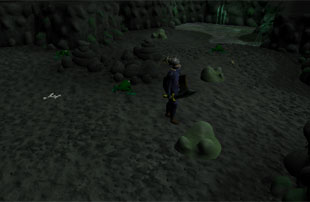
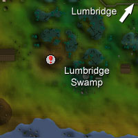
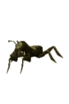
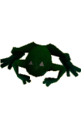
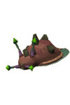
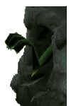

Lumbridge Swamp Dungeon (Members)
Warning | Introduction | Location | Points of Interest | Personalities
Quests | Beasts of the Dungeon | Miscellaneous
Quests | Beasts of the Dungeon | Miscellaneous
Warning
You will need a light source. There is a great deal of gas in Lumbridge Swamp Dungeon, so it is not a good idea to use an open flame such as a torch or a candle as your light source. If you wander too close to a gas vent with an open flame the gas will explode, injuring your character and extinguishing the light source. If your light is extinguished you will need a tinderbox to relight it.
As some creatures in the dungeon have a poisonous bite, it's a good idea to bring an anti-poison potion with you.
Introduction

This place is not all misery and dreariness, though. Within the maze of tunnels is a place sacred to Guthix and guarded by a serpent who may be older than recorded history.
Location

It can also be accessed from Lumbridge Castle's basement once you've progressed far enough through the Lost Tribe quest. You'll need to go into the goblin caves north of the Swamp Dungeon to use a pickaxe to tunnel through a blocked hole between the two dungeons. When you've done this you will be able to go through the hole whenever you like.
Points of Interest

Personalities
![[image]](../../img/main/kbase/npc/area_guides/chathead/juna.gif) Juna is a truly ancient snake who has spent three thousand years guarding the Tears of Guthix from the unworthy. She is, as you can well imagine, quite bored and hopes only that you might entertain her with a story.
|
| Juna can be found in the Tears of Guthix cave. |
Quests
The following quest can be started in Lumbridge Swamp Dungeon:
Tears of Guthix (Members)
Beasts of the Dungeon
![[image]](../../img/main/kbase/npc/area_guides/cave_goblin.gif) Cave goblins are goblins that have adjusted to the low light levels of the caves. They are generally terrified of everything, especially wandering humans with lights.
|

Cave bugs are strange creatures confined to the darkness of the caves. They are very simple opponents, and anyone bold enough to enter the dungeon should have little difficulty killing them.
|
|
| Cave goblins can only be found in a single chamber of the dungeon, to the extreme east. | Cave bugs can be found throughout the dungeon; you must have a Slayer level of 7 to kill them. |
![[image]](../../img/main/kbase/npc/area_guides/cave_crawler.gif) Cave crawlers are long, lizard-like creatures with six legs and a series of green stripes down their backs. Their bite is poisonous, but they are less resilient in the face of crushing or Magic attacks.
|
![[image]](../../img/main/kbase/npc/area_guides/cave_slime.gif) Cave slime are shapeless creatures that live by digesting anything around them... including adventurers that are overcome by the dangers of the dungeon. Their attacks, like the cave crawler, are poisonous.
|
|
| You must have a Slayer level of 10 to kill cave crawlers. | You must have a Slayer level of 17 to kill cave slime |
|

Big frogs are considerably larger than you'd ever expect a frog to grow to, and they're certainly not for new adventurers. Thankfully, they never stray far from water.
|

Rock slugs are tough creatures that look nothing like the slugs that eat your mum's tomatoes. They cannot be killed by ordinary means, so you'd best take some salt down into the dungeon with you if you want to prey upon them.
|
|
| You must have a Slayer level of 20 to kill rock slugs |
|

Wall beasts are nefarious creatures that lurk inside holes in the walls, waiting to reach out and attack any unwary adventurers. They cannot be attacked unless they have had their initial suprise attack thwarted. Because the palm of their otherwise dangerous claw is quite a tender spot it is a very good idea to take a spiny helmet into the dungeon with you, or learn to look for their lairs and avoid them entirely.
|
![[image]](../../img/main/kbase/npc/area_guides/giant_frog.gif) By far the most dangerous creature in the dungeon, giant frogs have fed on the smaller creatures around them for years to grow into monstrous beasts capable of slaying all but the toughest of adventurers.
|
|
| Wall beasts can be found in the walls of the dungeon where the tunnels narrow into a thin passage, and you must have a Slayer level of 35 to kill them. | Thankfully for most, giant frogs are only found outside the entrance to the Tears of Guthix cave. |
Miscellaneous
- Cave crawlers and cave bugs are good for herb drops, especially secondary ingredients.
- Cave slime always drops two items, sometimes including a Treasure Trail map.
- Wall beasts have been known to drop white/gold mystic hats.

More articles in
Dungeons
|
|